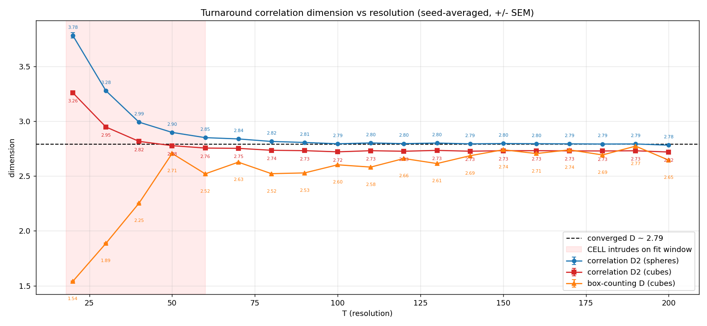
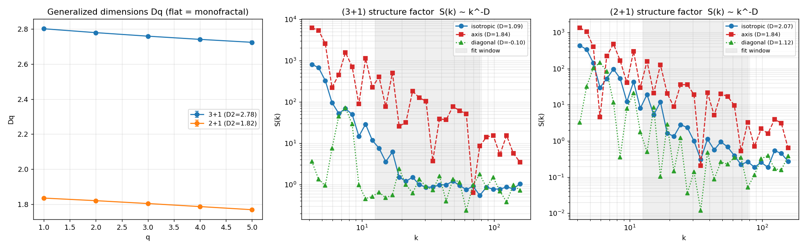
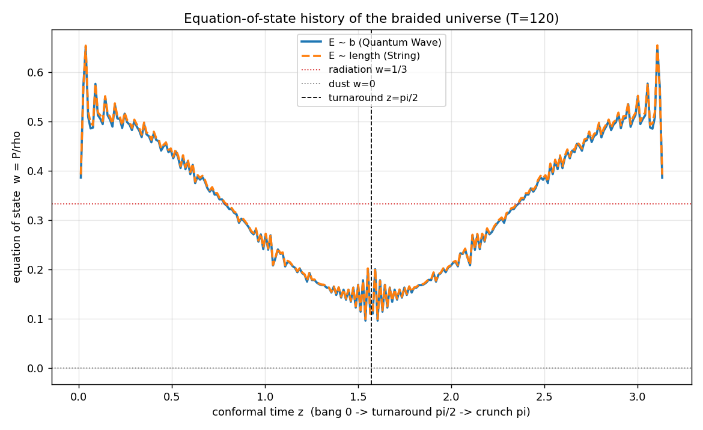
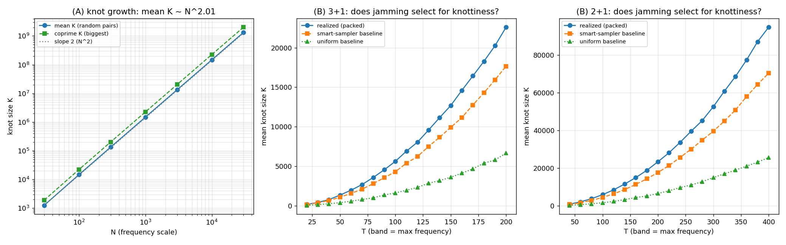
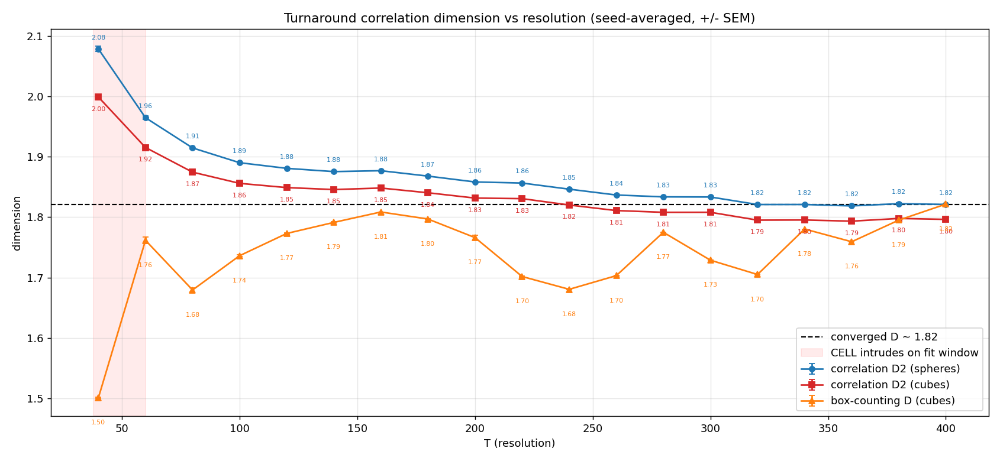
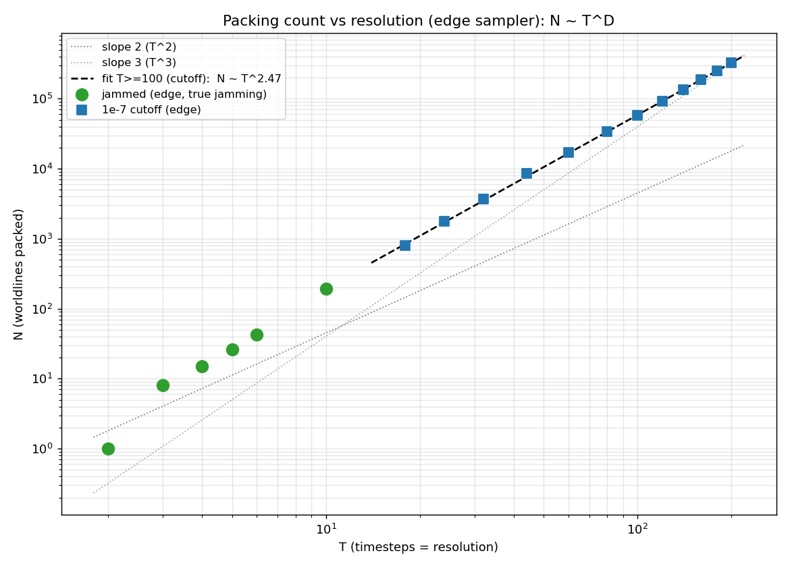

A packing model of the cosmos: parametric sinusoidal worldlines threaded into a closed conformal-time loop, jammed to saturation, and studied for the fractal dimension and emergent physics that fall out of the geometry.
Measured packing dimension D ≈ 2.79 in 3+1 and ≈ 1.82 in 2+1 (jamming-free, mildly multifractal).
Each viewer packs a universe live in your browser and renders every worldline across all of conformal time. WebGL required.
Time wraps the donut; space is the tube cross-section. The "rectangles" are the Lissajous envelopes of individual worldlines.
Toroidal variant: space wraps at ±1 and collisions cross the seam; amplitudes drawn with a ∈ [-1,1] and |b·F| = 1.
The full 3+1 model rendered on a 3-sphere embedding.
How the flat comoving square maps onto the torus surface.
Variant emphasizing the rectangular wave structure.






braidlab orchestration suite and CUDA packing engines.